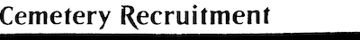

What's in a name?
Unlike in Romeo and Juliet, calling a card by any other name would not smell as sweet (or as accurate). As part of our card recognition algorithm, we have to be able to quickly extract the names of the cards from the images we take. Luckily, there's a package could pytesseract that's able to do so with a good amount of accuracy, after some image processing is done on the picture.
The Process
The pictures we take come in the format of what's shown here on the left. The top half of the card holds all of the information we need: the name on the top left of the card, and the set symbol on the bottom right of the card. We can get the rest of the information (such as the colour of the card and its value) using just these two qualifiers. In this post, however, we'll focus on how we extracted the name.
This is already pretty good, but when I tried using pytesseract to extract the text from the card, it would get confused by the picture and the symbols on the card and output some nonsense text (my personal favourite output for the above card was Cemetary Recruitment ??Ski!, it seemed like pytesseract missed going outside, which I can empathize with).
Some image processing was required, and I decided to crop the picture straight to the area of text that we required (it's easy to do this under the assumption that all of the cards will be in the same position) and make it black and white. There was an option to do OCR (Optical Character Recognition), which uses software to detect where the text is and sends that area to pytesseract to be processed, but that would have been a lot of work when just cropping the image would achieve the same result. The intermediate image looked like this:
Pretty good! Pytesseract had no difficulty extracting the text from an image like this, and we were able to get 100% accuracy with extracting the name from the card every time (in a test of ~10 cards).
And there's the name of the card printed out to the console. It's pretty incredible the amount of work it takes to do something that we, human beings, take for granted. I'd like to take this opportunity to thank the great minds behind opencv and pytesseract, without who this project probably wouldn't exist. You make our lives a trillion times easier.